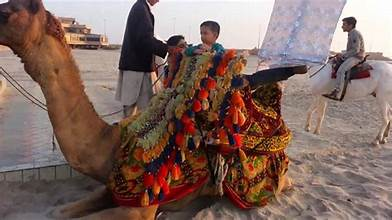
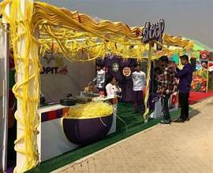

Clifton Beach
Karachi’s most popular seaside promenade along the Arabian Sea, known locally as Sea View.
Karachi’s most popular seaside promenade along the Arabian Sea, known locally as Sea View.
Clifton Beach—also called Sea View—is a lively stretch of coastline along the Arabian Sea in Karachi’s Clifton district. Open 24/7, it's celebrated for its accessibility, recreational charm, and diverse visitorship.:contentReference[oaicite:1]{index=1}
Originally a barren seashore known as “Hawa Bandar” (“Wind Port”), it was transformed during British rule and has since become a vibrant public space with camel rides, dining, events, and scenic views.:contentReference[oaicite:2]{index=2}
Clifton Beach is best known for its camel and horse rides, buggies, and promenade walks. It’s also a prime spot for New Year’s Eve celebrations and PAF air shows.:contentReference[oaicite:7]{index=7}
Street food stalls serve popular snacks like spicy corn, chaat, pakoras, and drinks, while upscale dining areas like Do Darya and nearby restaurants add a gourmet touch.:contentReference[oaicite:8]{index=8}
